| Previous Section | Next Section | Index | Questions | Search the Text |
This section discusses three additional serial interfaces in the 68HCS12 and one additional popular serial interface that isn't implmented directly by the 68HCS12. (Note that the BDLC interface is not in the microcontroller used in the Dragon12-Plus board.) The first two interfaces are network communication protocols, like IIC, but more complicated. The third interface is used for debugging the microcontroller. The software required to use these interfaces is considerably more complicated than that for the SCI, SPI, and IIC, and is beyond the scope of this text. This section will concentrate on the data format at the bit and message frame levels, with links to other references for details of the higher level features as well as the physical bus characteristics.
The fourth interface, the Dallas Semiconductor 1-Wire® bus, is not directly supported by the 68HCS12 but implementing the interface is straightforward. It functions similarly to the BDM interface which is also covered here.
The Byte Data Link Controller is used to implement a node on a SAE (Society of Automotive Engineers) J1850 network. This network is most frequently found in American automobiles, and is a low speed bus using a single signal wire and no synchronous clock. Transmissions on the bus consist of a priority and message ID bytes followed by data in a software defined format. Messages are effectively broadcast to all nodes and it is up to each node to determine if the message is intended for them. The design does have extensive error detection features which are needed in the hostile environment of an automobile.
Data is transmitted at a nominal rate of 10.4 Kbps using a Variable Pulse Width format. There is also a 41.6 Kbps variation that uses Pulse Width Modulation and a two wire interface that won't be discussed here. The two formats are not compatible. The bus has a low level passive (un-driven) state and a high level active (driven) state, so the bus rests in the low state and transmitting devices drive the bus high. Collision detection works the same way is in the IIC interface - when a transmitting device transmits the passive value but sees the active value on the bus, it recognizes that a collision has occurred and stops driving the bus.
Each data bit, as well as the frame markers, all called symbols, consists of one and only one state transition, with the difference between the "1" and "0" data bits, as well as each type of marker, being determined by their time. This technique means data transmissions will always involve state changes and the clock rates of all the devices must be reasonably close, much like the SCI module. The wide variation in lengths and the existence of a transition to re-synchronize at every bit means the clock tolerances are large, much more so than the SCI. The symbols are as follows:
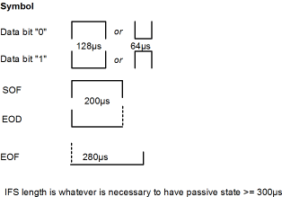
Message frames start at a bus idle state and starts with the SOF symbol which notifies all receivers that a message is starting. This is a long active signal which can be easily detected by listening receivers without their having to process every bit being transferred on the bus. There are variations in format of the frame, but the following is representative of the most common. The SOF is followed by the header and data bytes (J1850 specifies a maximum of 12 data bytes), and a CRC (cyclic redundancy check) byte for error detection. The first header byte is the priority byte -- priority (in the case of collisions) can be arranged by having data bits with the largest active time which means that the highest priority value is 00000000. The priority is a the complement of the value in this byte. An EOD symbol, which is longer than the data bits, marks the end of the data. The EOF symbol, indicating the end of frame, is even longer than the EOF. The IFR field (In Frame Response bytes from a receiving device) is optional and if absent the EOD symbol becomes an EOF symbol. The IFS symbol is just a minimum idle time allowing all devices to be ready for the next message frame.
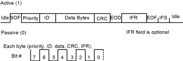
The CRC value is a function of all the preceding bits. The theory and method of operation is beyond the scope of this text, but suffice it to state that its intent is to produce a different value for not only single bit errors, as a parity bit would, but also to be able to detect short strings of missing or defective bits such as is likely to occur in serial data transmission. The receiver calculates the CRC value of the incoming data and checks for a match. It can then indicate a transmission error if the match does not occur.
The BDLC module in the 68HCS12 is very complex as are the details of the J1850 protocols. The microcontroller is not capable of driving/receiving the J1850 bus directly but requires an interfacing bus transceiver. For further study, see the documents BDLC Block Guide and HIP7020 J1850 Bus Transceiver, and the Freescale Semiconductor application note AN1731.
Like the Byte Data Link, the Controller Area Network is also a serial communication network primarily designed for automotive use. This standard has it's origins in Europe. This bus is typically implemented using a differential signal pair for increased noise immunity and has a higher data transfer rate (up to 1 Mbps for the 68HCS12 MSCAN) than the BDLC. The bus has two levels, one which is used for the logic 1 level is called recessive while the other, used for the logic 0 level, is called dominant. If the bus is not being driven, the recessive state occurs. Any bus node can drive the bus to it's dominant state. For convenience, the figures show the recessive state as a high level and the dominant state as a low level. Like the BDSC and SCI, no clock is distributed, and like the SCI each bit has the same time length. Collisions are detected in the same manner as the IIC and BDLC -- all transmitters monitor the bus and if the bus is unexpectedly in the dominant state then the transmitter loses the bus contention and stops transmitting.
There are four different types of frames transmitted. The most common is the Data Frame which transmits data to the receivers. The data frame has an identifier that the receivers can use to determine for which the data is intended. The Remote Frame requests the transmission of a data frame with the same identifier. An Error Frame is transmitted by any node that detects an error on the bus. It is used to signal the need for retransmission. An Overload Frame is used to consume time, delaying transmissions, so that slow devices have time to process messages. Only the data frame will be examined here.
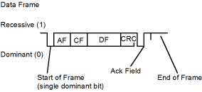
Like the SCI interface, the start of the frame is indicated by a single bit of asserted (dominant) state. It is important that the clock rate of the transmitter and the receiver be close so that bits are not misinterpreted. In the SCI there is typically 10 bits in a frame and a drift of roughly half a bit is allowed, so the clock rates must be within 5%. However with the CAN bus the can be up to 101 bits and it would be difficult to maintain less than 0.5% error, especially in the automotive environment. So a technique called bit stuffing is used. If when transmitting the start of frame, AF, CF, DF, or CRC fields there is a sequence of 5 bits of the same level, an additional complementary bit is inserted. On the receiving end when a sequence of 5 bits of the same level are detected, the next bit is ignored (unstuffed). By doing this there is guaranteed to be an edge at least every 5 bits to allow the receiver to resynchronize to that edge. This means that clock rate differences of up to about 10% can be tolerated.
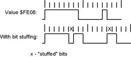
Each frame starts with an arbitration field consisting of an 11 bit identifier and one dominant bit to indicate a data frame. This is followed by a 6 bit control field which has two reserved bits and four bits to indicate the length of the data field, zero to eight bytes. This is followed by the data field.
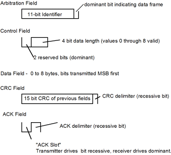
The CRC field is generated from all the previous fields and provides error checking. Any stuff bits are ignored in calculating the CRC. The CRC delimiter is always recessive as is the ACK delimiter in the ACK field. The ACK field has one significant bit position, called the ACK slot. In this bit period the transmitter drives the bit to the recessive state while any node accepting the frame (one that recognizes the message from the identifier as intended for itself) will drive dominant. This way the transmitter can tell if the frame was successfully received.
The MSCAN module in the 68HCS12 implements all but the hardware bus interface for a CAN node. It generates frames for transmission, monitors the bus to receive messages intended for reception, and buffers data in both directions. The module is described in the document MSCAN Block Guide. The CAN standard is provided in the Bosch document CAN Specification Version 2.0. An example bus interface IC that works with the 68HCS12 is provided in the Philips data sheet CAN controller interface PCA82C250.
The Background Debug Mode feature of the 68HCS12 CPU core implements a hardware-based debugger and has been mentioned in passing throughout this text. The interface uses a single wire between the host system, which runs a debugging program, and the target 68HCS12 microcontroller which is being debugged. The pin used on the 68HCS12 is labeled BKGD and is also the MODC configuration input when the processor is reset. This allows the host system to place the target into Special Single Chip Mode, with the BDM active right at chip reset. Otherwise the target will start execution and will run until a BDM command halts it.
The BDM bus uses a pull-up resistor with the high state being logic 1 and the low state (driven by either the host or target) being logic 0. The host and target pulse the bus high to create faster rising edges than would be obtained by the pull-up resistor alone, but don't drive the bus high on a continuous basis. The bus speed is determined by the crystal frequency of the target system. Use of the PLL doesn't effect the bus speed. One bit period of the bus is equal to 16 crystal clock periods, each period is called TC below. The transmission method is known as Return To Zero in that the bus is at the same voltage level at the end of each bit period. All bit transmissions start with the host driving the bus low. That edge is used by the target to synchronize with the host. To transmit a logic 1, the host asserts the bus low for 4 TC, pulses high, then the bus remains high for the remainder of the 16 TC. To transmit a logic 0, the bus is asserted for 13 TC rather than 4. The target samples the bus value 10 TC after it sees the falling edge. The sample value is the logic value of that bit.
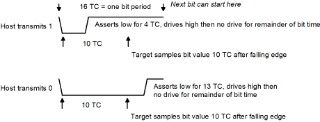
Transmitting data from the target to the host is more complex. The transfer of a bit is initiated by the host, which drives the bus low for 4 TC then stops driving the bus. The target sees the falling edge and either pulses the bus high at 7 TC (logic 1) or drives the bus low for 13 TC before pulsing the bus high (logic 0). The host samples the bus at 10 TC to determine the logic value of the bit.
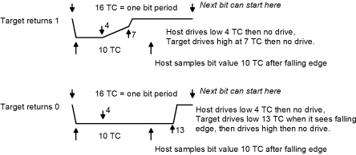
There are two types of messages, hardware and firmware. Hardware messages cause actions that can be processed while the target system is running the target application program. Firmware messages can only be processed by code in a normally hidden BDM memory in the microcontroller, and therefore can only be processed when the target application program is halted. The processor state that allows processing of firmware messages is called background mode. The message formats are:
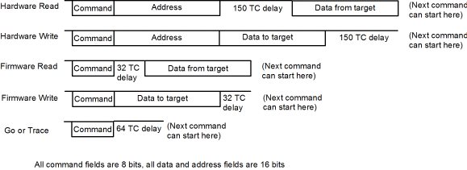
There are nine hardware commands, four allow reading or writing memory bytes or words in the target's application memory and I/O registers. Four more are identical but switch in the BDM registers and memory at $FF00 to $FFFF. The ninth command causes the background mode to be entered. This command has no address or data. The delays in the messages are there to allow the action to occur, which may include the time consuming writing to the EEPROM or flash memory.
In background mode 15 additional commands are available which are executed via code in the microcontroller. The delays in these command messages give time for the code to execute. These commands allow reading and writing the D, X, Y, PC, and SP registers of the interrupted application program as well as reading and writing of memory using post increment index register X addressing. The application's CCR register contents is saved in a BDM register that can be read or written using hardware commands. Three addition instructions are for going to the application program (causing background mode to be exited), executing a single instruction of the application program, and enabling tagging and going to the application program (causing background mode to be exited). The last instruction allows the instruction execution to be traced on a logic analyzer.
A host 68HCS12 debugging program is built into recent versions of D-Bug12 as described in the Reference Guide for D-Bug12 Version 4.x.x. The BDM feature is documented section 14 of the HCS12 V1.5 Core Users Guide.
The 1-Wire® bus uses a single signal wire, called DQ and works similarly to the BDM interface. The 1-Wire bus does support having multiple slave devices but is intended for environments with a single master device. It is easiest to use in an environment where there is a single master and a single slave. An unusual feature of the bus is that it is possible to power slave devices from the signal wire, which is called "parasite power". The slave device stores charge during the period of time the DQ line is in the high state.
A single 5K ohm pullup resistor is used on the DQ signal line. The bus master (in our case, a 68HCS12) must be able to read the signal level and drive the signal to the logic low state. Any parallel port pin can be used for this function. In this example will will use Port T, pin 0. The port is initialized with the data and direction bits both zero so the bus is not being driven.
All bus transfers start with the master sending a Reset pulse and the slave device(s) responding with a Presence pulse. The next part of a transfer is a ROM command. The ROM command is used to select the slave device. All devices are manufactured with a unique 64 bit address code. After the ROM command the master device can issue a single Function Command. Either command type may be followed by an exchange of data, depending on the particular command. To issue additional commands, the entire process must be repeated.
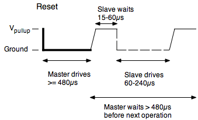
All commands start with a reset pulse sent by the master. Slaves respond with the presence pulse. We could have a loop in our program to generate the 480 microsecond period that the master must drive the DQ wire low. However if our program is using interrupts, the timing would not be accurate and the period might be much longer than intended. While it would not hurt in this case, since the master must assert DQ low for a minimum of 480 microseconds, we can come closer to the minimum value by using the timer module and the TCNT register.
We will calculate the ending time by loading the value in TCNT and adding to it the number of clock counts corresponding to the delay we want. In this case, with a 24MHz clock rate and and a 480 microsecond delay, we want 24*480 clock counts. We then need a loop that repeats until TCNT is greater than the calculated end time. But this poses a problem. If we use an unsigned comparison, then the comparison won't work correctly if the current time is negative and the end time is positive. But if we use a signed comparison, then the comparison won't work correctly if the current time is positive and the end time is negative. Instead we will rely on the compare instruction doing a subtraction operation. If the result of the subtraction of the current time from the end time is positive then we haven't reached the end time. This comparison method will for for times less than 32768 clock counts. We get the following subroutine to perform the reset and return the presence bit:
ow_reset:
bset DDRT #1 ; Drive PT0 low
ldd TCNT
addd #480*24 ; 480 microseconds
rs1: cpd TCNT
bpl rs1 ; wait for finish-current < 0
sei ; no interrupts -- we need accurate time
bclr DDRT #1 ; stop driving pin
ldd TCNT
addd #70*24 ; 70 microseconds
rs2: cpd TCNT
bpl rs2
ldaa PTIT
anda #1 ; get presence bit
psha
cli ; re-enable interrupts
ldd TCNT
addd #410*24 ; additional 410 microsecond delay
rs3: cpd TCNT
bpl rs3
pula
rts
Note that interrupts are disabled during the time the program is delaying to read the presence bit. An interrupt at this time may mean DQ is sampled too late and might not see presence indicated.
The command bytes as well as any data bytes are transmitted least significant bit first. The master sends data bits with 0 and 1 time slots. There can be any amount of time between the slots. Eight slots are sent per byte -- there is no provision for parity, checksums, or CRC codes.
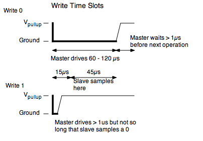
The following subroutine will send the byte that is in accumulator A. A loop structure is used to send a single bit per iteration. Like the reset pulse, the time that the master drives the DQ signal low is critical, so the interrupts will be disabled. On the other hand, the time the master is not driving the DQ signal is not critical, as long as the time slot is sufficiently long, so interrupts can be enabled during that time.
ow_write: ; byte to send is in A
ldx #8 ; repeat 8 times (once per bit)
wloop: tab
lsrb
pshb ; save byte shifted right one bit to the stack
sei
bset DDRT #1 ; Drive pin low
bita #1 ; see if bit is high or low
bne whigh ; branch if high
ldd TCNT
addd #60*24 ; drive low for 60 microseconds
w1: cpd TCNT
bpl w1
bclr DDRT #1 ; Stop driving pin
cli
ldd TCNT
addd #24 ; 1 microsecond
w2: cpd TCNT
bpl w2
pula ; restore shifted byte to A
dbne X wloop ; repeat until all 8 bits transmitted
rts
whigh: ldd TCNT
addd #24 ; 1 microsecond
w3: cpd TCNT
bpl w3
bclr DDRT #1 ; stop driving pin
cli
ldd TCNT
addd #60*24 ; 60 microseconds
bra w2
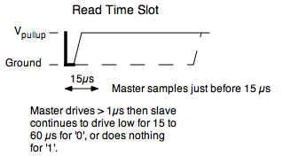
When data is expected back from the slave device, read time slots are used. The master drives DQ low for one microsecond then releases the signal. If the slave wants to send back a '1' then it does nothing, but if it wants to send a '0' it drives DQ low for 15 to 60 microseconds. The master samples the signal just before 15 microseconds after driving the pin low. The following code reads a byte of data which it returns in accumulator A.
ow_read: ; return byte received in A
psha ; save value on stack
ldx #8 ; repeat 8 times (once per bit)
rloop: sei ; critical timing
bset DDRT #1 ; drive pin low
ldd TCNT
addd #24 ; delay 1 microsecond
r1: cpd TCNT
bpl r1
bclr DDRT #1 ; stop driving
ldd TCNT
addd #24*13 ; delay 13 more microseconds
r2: cpd TCNT
bpl r2
ldaa PTIT ; get bit
cli ; end critical timing section
pulb
lsrd ; shift bit into b
pshb
ldd TCNT
addd #24*47 ; delay 47 more microseconds
r3: cpd TCNT
bpl r3
dbne x rloop
pula
rts
Each 1-Wire device has a unique 64 bit serial number in ROM. If more than one device is connected, the device must be selected by its serial number. There is a ROM command that allows discovery of all connected device serial numbers. However we will only consider the simplest case of a single device. In this case the Skip ROM command is given to select all devices. Since there is only one device, "all" will select it.
Function commands are device specific. A single function command can be issued to the device selected by the ROM command. For instance, the DS1820 is a digital thermometer. The reset signal is sent followed by the skip ROM command ($CC), then the function command to make a temperature measurement ($44). This can take up to one second, so the microcontroller must wait. Then the reset signal is sent again, followed by anoter skip ROM command. Then the function command to read the scratchpad memory, $BE, is sent. The microcontroller then reads the 9 bytes in the scratchpad. The first two bytes contain the temperature in tenths of degrees, Celsius.
Because the code enables interrupts during times when the timing isn't critical, it is suitable for use in applications where interrupts are used. The code can also be run from within an interrupt service routine provide there is protection against reentrancy. See the appendix Multiple Processes for the necessary technique.
If you are programming the microcontroller in C, you may wonder how to implement the timer delay. One easily readable approach is to use the macro:
#define USEC_DELAY(_x) ({unsigned short y = TCNT; while (TCNT-y<24*_x); })
This macro also gets around the unsigned versus signed problem by comparing the difference between elapsed time with the desired elapsed time. In C, the reset function is shown below. The other functions can be implemented similarly:
unsigned char ow_reset(void)
{
unsigned char bit;
DDRT |= 1; /* Drive DQ low */
USEC_DELAY(480);
__asm__ __volatile__ (" sei "); /* disable interrupts */
DDRT &= ~1; /* Don't drive DQ */
USEC_DELAY(70);
bit = PTIT & 1N;
__asm__ __volatile__ (" cli "); /* Enable interrupts */
USEC_DELAY(410);
return bit;
}
Continue with EEPROM Memory
Return to the Index.